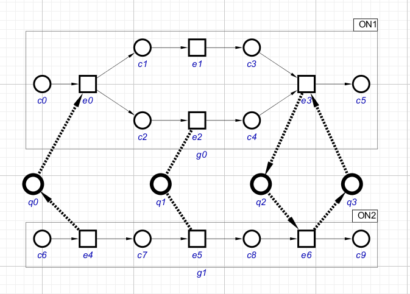
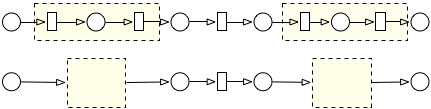
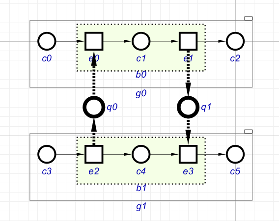
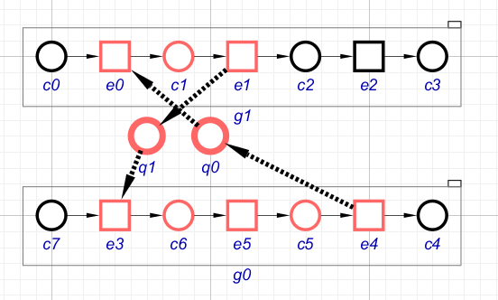
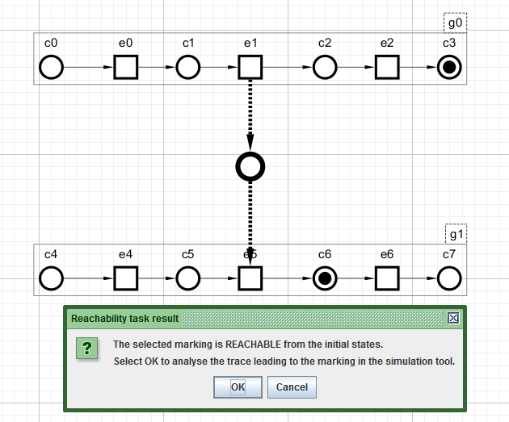
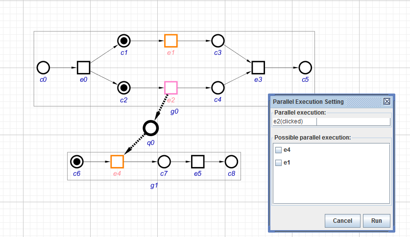

Table of Contents
Structured Occurrence Net plugin
Familiarise yourself with Workcraft interface to learn its common features that are available for all plugins.
This plugin is intended for capturing, simulation and verification of Structured Occurrence Net models.
Modelling
In order to create a Structured Occurrence Net (SON) work choose File→Create work… menu item and in the New work dialogue select Structured Occurrence Net as the model type.
Occurrence Net
An Occurrence Net (ON) is a directed acyclic graph used to record dependencies between events in a single execution of a concurrent system. The following figure shows an occurrence net example.

Activate Condition or Event ![[E] Event](../core/editor_tools-transition.png "[E] Event") tool to create one or more conditions or events, respectively. Activate the Connect tool
tool to create one or more conditions or events, respectively. Activate the Connect tool ![[C] Connect](../core/editor_tools-connect.png "[C] Connect") to create causality arcs between conditions and events. In this mode, when the mouse is over a node (i.e. a condition or an event), this node will be highlighted. Then, guided by the messages at the foot of the Editor window, the user can draw a connection from this first node to a second node. Multiple such pairs of nodes can be connected, until the mode is switched to some other mode from connect. If Ctrl is held down while clicking on a set of nodes in sequence a whole linear series of connections can be made between these nodes.
to create causality arcs between conditions and events. In this mode, when the mouse is over a node (i.e. a condition or an event), this node will be highlighted. Then, guided by the messages at the foot of the Editor window, the user can draw a connection from this first node to a second node. Multiple such pairs of nodes can be connected, until the mode is switched to some other mode from connect. If Ctrl is held down while clicking on a set of nodes in sequence a whole linear series of connections can be made between these nodes.
When the connection tool is activated, one of the following connection types can be selected in the Tool controls window:
- Causal Connection
- Behavioural Abstraction
In the case of ordinary Occurrence Nets, the connection type must be a Causal Connection, and be from a condition to an event, or vice versa. Any attempt at linking two conditions will provoke an error message.
Not all user errors are detected and so result only in error messages – those that cannot be immediately detected can be checked for using the Verification Tool.
Conditions and events are automatically named (c1, c2, c3 etc., and e1, e2, e3, etc.) as they are created. These names are by default shown in blue below the conditions and events. The user can use the Property editor to change various aspects of the currently selected node or connector, to provide a label, and to indicate the placement and colouring of this label.
An occurrence net cannot be recognised and analysed until it has been defined, i.e. delineated as a group. To do this, use the Select tool ![[S] Select](../core/editor_tools-select.png "[S] Select") to select one or more nodes, either by clicking on them or dragging a bounding box around them; the selected nodes turn blue. These selected nodes can then be combined into a group using the Group tool
to select one or more nodes, either by clicking on them or dragging a bounding box around them; the selected nodes turn blue. These selected nodes can then be combined into a group using the Group tool ") . The resulting group is shown using a solid-line box, the entire contents of which will remain blue while the box is selected, as shown in the following figure.
. The resulting group is shown using a solid-line box, the entire contents of which will remain blue while the box is selected, as shown in the following figure.

While the box is selected the Property editor can be used to give the group a label. The box becomes unselected if the user clicks outside it, and becomes selected again if she clicks inside it.
Text notes can be included with condition and/or event nodes in groups but cannot be in groups on their own – an error report appears if an attempt is made to create such a group.
A group can be destroyed, leaving its contents in place but ungrouped, using the Ungroup selection button ") .
.
Once a group has been created it will not be possible to edit any of its component within the group without entering the group. The user enters a group by double-clicking inside it or using the Level down button ") . The result is to remove the blue colour from the group, and to turn everything outside the group grey, and hence uneditable. The user can leave the group by double-clicking anywhere outside it or clicking the Level up button
. The result is to remove the blue colour from the group, and to turn everything outside the group grey, and hence uneditable. The user can leave the group by double-clicking anywhere outside it or clicking the Level up button ") .
.

In summary, groups are used to structure a SON model. At any moment the user can be in just one group, and so be able to select and then edit the nodes and connectors that form its contents – everything outside the group will be greyed out and uneditable. Blue is used to identify the currently selected nodes or groups. Currently nested groups are not allowed by the SON plugin.
Communication SON
The first and most basic form of SON is the Communication SON (C-SON). A C-SON involves two or more ONs that are connected by one or more synchronous or asynchronous communications, so can be used to model an activity that has involved interaction between communicating systems. Any communication between occurrence nets (i.e. groups) must go via a special node named a channel place. The channel place syntactic device has been introduced since 1), which (rather anomalously) showed communication asynchronous or synchronous links as going directly between an event in one ON and one event in another ON.
A communication link between two ONs is created via a channel place. First activate the Chnnel Place tool  and create an instance of a channel place. Then use the Connection tool , to link an event in one ON to the channel place, and then the channel place to an event in another ON. Full details about the channel place concept are given in 2).
and create an instance of a channel place. Then use the Connection tool , to link an event in one ON to the channel place, and then the channel place to an event in another ON. Full details about the channel place concept are given in 2).
A new connection link to or from a channel place will be automatically shown as being of type asynchronous communication, represented by a bold dashed line with arrows. The channel place must not be in any group – it can only be linked to events that are in (two different) groups. The connection tool enforces these restrictions, but it does not stop users accidentally making a pair of directed links from a channel place or to a channel place – use of the verification tool will subsequently find this error.

Consider the above C-SON example. It consists of two interacting occurrence nets where the connection type between events e0 and e4 is an asynchronous communication, with the meaning that e0 cannot happen before e4. An asynchronous communication can be turned into a synchronous communication by double clicking on its channel place. This will remove the arrow heads on the bold dashed lines – see the connection between e2 and e5. Double clicking again on the channel place in a synchronous communication will turn it back into an asynchronous communication.
A synchronous connection is in fact logically equivalent to a pair of channel places whose asynchronous communication links form a cycle – see the cycle involving e3 and e6. (The user can use either form when creating a synchronous communication.)
The cycle involving e3 and e6 does not violate SON’s acyclic property due to its execution semantic. The two connected events can only be executed synchronously. The SON Simulator therefore ensures that both e3 and e6 participate in single step when either is selected by the user for execution, and that both channel places are filled and emptied synchronously, leading to conditions c5 and c9 holding.
Behavioural SON
The second form of structuring, behavioural abstraction, allows the activity of an evolving system to be modelled. Thus a Behavioural SON (B-SON) gives information about the evolution of an individual system, and the phase of the overall activity that is associated with each successive stage of evolution of this system. A phase is a fragment of an ON beginning with a global state (or “cut”) and ending with a global state which follows it in the causal sense, including all the conditions occurring between these global states. The following figure shows an ON which has been divided into three particular phases by two chosen cuts.

Using this phase concept, a B-SON thus provides a two-level view of execution history: the low level structure provides the details of its behaviours during the different evolution stages represented in the upper (abstract) level view.
Between them the set of upper level conditions in an upper level ON must be linked to a complete set of phases of the lower level, i.e. to all the initial and final conditions of each phase. And the ordering of the conditions of the upper ON must match that of the phases of the lower ON. The error message “Invalid phase: phase does not reach initial/final state” that results if either of these conditions is not met is rather obscure. (However, subject to these conditions, there can be multiple upper level ONs corresponding to a single behavioural ON, i.e. there can be several different behavioural abstractions of the same detailed activity.)
To create a B-SON, activate Connect tool and choose the connection type Behavioural Abstract in the Tool controls panel. The connection then is able to provide a link to a condition in the abstract ON from appropriate conditions in the low level ON(s), as shown in the following figure.

The present version of SON plugin follows the present (somewhat restrictive) set of formal definitions of B-SONs, so abstract ONs must be straight line graphs, which can have communication links to other abstract ONs, but cannot themselves have further levels of abstraction “above” them, and or be related to more than one low-level SON for each abstract condition. All of the conditions in an abstract ON must have behavioural links from low level ONs.
Temporal SON
Temporal SON (T-SON), allows the use of temporal abstraction to define atomic actions, i.e. actions that appear to be instantaneous to their environment. Intuitively, a T-SON shows a system abbreviation of that part of the behaviour that is hidden by the abstraction. This is illustrated by the following diagram.

Such an atomic action can be created using a concept of block. The means of defining a block is similar to the group function: select a set of nodes and combine them as a block by clicking the Block button ") . One can use the ungroup button to destroy a block (i.e. make the set of nodes editable again). A block is differentiated graphically from a group in having a dotted rather than solid line bounding box, and a shaded interior.
. One can use the ungroup button to destroy a block (i.e. make the set of nodes editable again). A block is differentiated graphically from a group in having a dotted rather than solid line bounding box, and a shaded interior.
A block can be collapsed by either double-clicking inside it or by changing its Is Collapsed property in the Property editor. The behaviour of a collapsed block is regarded as an (abstract) event, where the connectivity between this event and those conditions which survived collapsing (i.e., the block’s interface) is inherited from the events that have been collapsed.
Due to the special behaviours of the block, several restrictions apply to block creation. Attempted violations of some of these restrictions are recognised and prohibited immediately during the creation operation, i.e., a block’s interface must be conditions; a block can involve only conditions and events; and it cannot cross phases. Other restrictions can be detected through the use of verification tool, e.g., the requirement for causal relations between block inputs and outputs; and for acyclicity (see the example below).
As an example, the SON model in the following figure contains two (un-collapsed) blocks b0 and b1 represented by dotted-line boxes with light green background colour. Note that a collapsed block may potentially affect the behaviour of a SON model. For example, the collapsing of b1 would lead to an invalid asynchronous cycle in the SON. Such an error can be detected by the structural verification tool.

Verification
Two types of verification tools are currently available for SON models: structural properties and reachability analysis.
Structural properties
SON plugin provides the user with a set of structural verification algorithms that can be used to validate the model. For example, the cycle detection tasks check SONs’ acyclic property and the phase correctness tasks are used to verify valid phases in B-SONs. The user can invoke verification by selecting Tools→Verification→Structural properties. The verification setting dialog allows users to specify the particular SON’s model type as well as which groups they would like to verify. The results of the verification are detailed in a verification report, and are shown by colouring the SON model. Thus the borders of conditions and events that are implicated in a cycle are coloured red, and invalid nodes (e.g. an initial or final event, of a condition linked to multiple events) have their interiors coloured pink.

If the Highlight erroneous node check box is ticked then incorrect nodes and cycle paths get highlighted.
The File menu at the top of the Verification Result window can be used to Export the results to a text file. This will by default be to the user home directory, so the user will need first to navigate to this directory if so wished.
The following figure shows how the ON verification tool reports (both pictorially and textually) the results of checks for freedom from cycles, caused by arcs within ONs, the requirement for ON fragments to start and terminate in places and not events, and the fact that places must not have multiple incoming or outgoing arcs.


In the next example the events and conditions that are shown with red borders form a cycle involving asynchronous communications links joining multiple ONs. (Tools→Set colour to default can be used to remove these error indications.)


Reachability analysis
A reachability analysis can be applied to a SON model. Such analysis establishes whether a given marking (a set of marked conditions and/or channel places) can be reachable at the same time from the initial states. In other words, any marking involving two causally related nodes is not reachable since one of these nodes must happen before the other can.
To use the function, mark some conditions/channel places first by either changing their Marked properties in the Property editor or by double clicking on them. Then run Tool→Verification→Reachability analysis. A dialog box will pop up to report the task’s result. If the verified marking is reachable, then a request can be made for the trace leading to the marking to be passed to the simulation tool for playback or further analysis.

Simulation
The simulation function can be activated by clicking on the Simulation button  Simulation") . The initial marking will be automatically set, i.e. all the input conditions of all the ONs will be filled with black tokens (except for those ONs that are ‘waiting’ for an event in another ON), and all of the thereby enabled events (including collapsed blocks, i.e. temporal abstractions) will be identified by being coloured orange. (Conditions and events that have not been grouped and made into an ON are not affected by simulation.) The simulation can then be conducted manually by clicking on a succession of enabled events, so causing tokens to move, and event colouring to be updated, and the simulation record augmented. At any stage a simulation can be abandoned, and any tokens and event colouring removed.
. The initial marking will be automatically set, i.e. all the input conditions of all the ONs will be filled with black tokens (except for those ONs that are ‘waiting’ for an event in another ON), and all of the thereby enabled events (including collapsed blocks, i.e. temporal abstractions) will be identified by being coloured orange. (Conditions and events that have not been grouped and made into an ON are not affected by simulation.) The simulation can then be conducted manually by clicking on a succession of enabled events, so causing tokens to move, and event colouring to be updated, and the simulation record augmented. At any stage a simulation can be abandoned, and any tokens and event colouring removed.

During simulation a dialog box will pop up when an enabled event is clicked and there exist other enabled events. This box can be used to select one or more of these additional enabled events in order to execute them simultaneously with the checked event. As an example, the clicked enabled event in the above figure is e2, with events e1 and e4 shown as two possible further parallel-executed events. When Run is clicked the simulation will move on just from e2, as e1 and e4 have not been selected.
The simulation tool controls provide the means to analyse and navigate a recorded simulation. There are two sources of data for a simulation record. They are shown in the two columns of the table in the Tool Controls window.

Branch (the right hand column) is used to record the firing sequence of events that were executed by explicitly clicking the enabled nodes of the model. The marks > and < represent forward and reverse directions of the simulation respectively. These directions can be switched by using .
Clicking on any of the editor buttons will cause the simulation record to be deleted.
Trace (the left hand column) plays the role of a “base sequence of events”. Initially, when one starts to use the simulation tool, this column will be blank. However it can be populated from a firing sequence that has been recorded in Branch (the right hand column). This sequence can be moved into Trace using the button  , leaving the Branch table empty.
, leaving the Branch table empty.
Trace can be also filled directly from other tools, e.g., with a firing sequence produced by the reachability tool.
While there is a firing sequence recorded in Trace or Branch, clicking on one of the entries causes the simulator to restore the model to its state just before that event has happened, i.e. with the tokens positioned, and the nodes enabled, appropriately.
The user can explore variants of a recorded trace by clicking on enabled events of the model. If one makes the same choice of enabled event(s) as before, nothing will be changed in Trace or in Branch, depending on which column the user selected. The relevant column will only start getting filled in (if the selected start point is from Trace) or replaced (in the case of selecting a start point from Branch) when the new firing sequence diverts from the one already recorded in the table in the Tool controls window.
When the simulation button has been selected, and an entry in the branch or trace column chosen, the appropriate simulation tool control panel buttons become active, and provide access to several additional simulation functions, most of which relate to simulation traces.
Error simulation
Each event has associated with it a Fault bit (visible in the Property editor when the relevant event is selected). This bit can be used to indicate whether the user wishes to regard the event as a faulty one. It can be turned on or off (shown by being checked or unchecked in the Property editor) using Tool→Error Tracing→Enable/Disable error tracing. A collapsed block (representing an abstract event) will be automatically marked with a faulty state when it contains at least one faulty event. If error tracing is turned on then the fault status of each event is also indicated in the Editor window, each event being flagged with a “1” or a “0”, “1” indicating a simulated fault. When error tracing is on, an error count is also shown below each condition, set initially to “0”. This count is not visible in a condition’s Property editor window, and cannot be changed manually by the user. Rather it is automatically calculated during simulation to indicate for each condition the number of faults that have been passed on the forward route to the condition. (These error counts are not affected by reverse simulation, or by closing a work and reopening it.)
When a simulation is started, all the error counts are set to zero, but the fault status of the events is not changed – in fact it becomes unchangeable while simulation is being used. Turning error tracing on and off has no effect on the fault flags and error numbers.
The menu Tools→Error tracing→Reset fault/error states is used to re-initialise all numbers to zero.